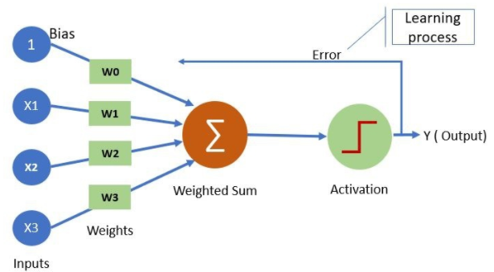
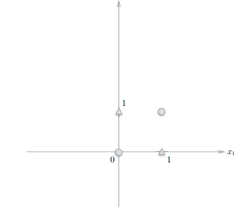
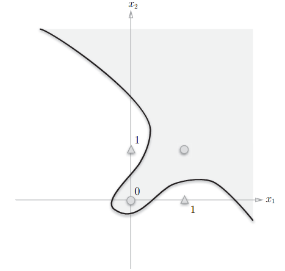
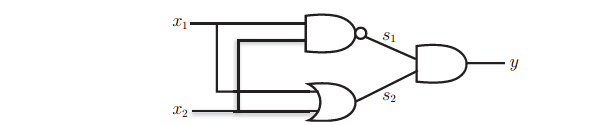
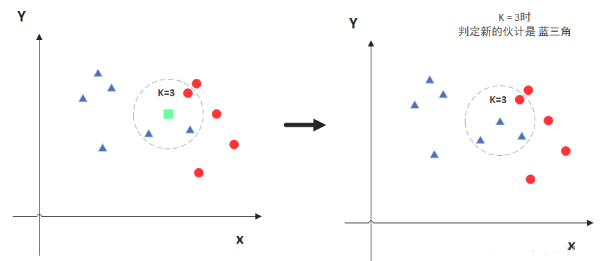
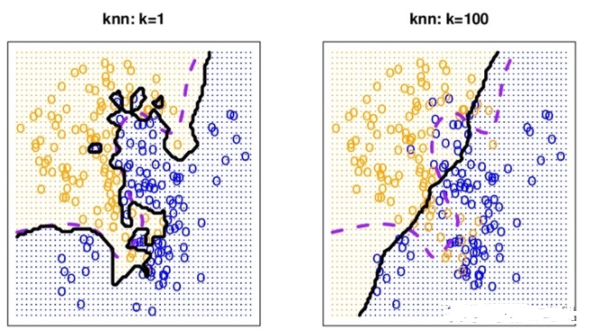
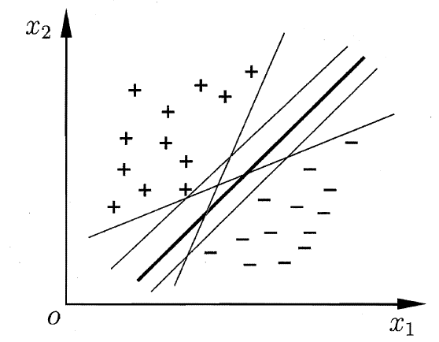
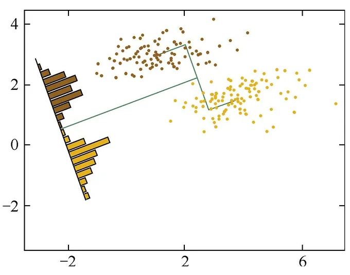

线性模型与经典算法
PLA(感知机)
简单介绍下感知机算法？
感知机算法的全称是Perceptron Linear Algorithm，是由美国学者Fran Rosenblatt 在1957 年提出的一种线性的算法模型，它也是神经网络的算法的起源思想。感知机是一个接受输入并具有输出，感知机的信号流只有1或者0。公式如下所示：
$$ f(x)=sign(wx+b) $$其中sign是符号函数, 如果 $wx+b>0$ 则输出1，如果 $wx+b<0$ ，则输出0。< p>

其中 $w$ 也即优化的参数。
单层感知机可以实现异或运算吗？
单层的感知机可以实现与门，与非门和或门，但是无法实现异或门。可以借助下图来形象的描述相关原因。
异或门的运算相当于找出一条直线将图中的圈和三角形分开，很显然是不能的。

多层感知机可以解决异或问题吗？
实现异或主要的划分曲面如下所示，使用一条曲线即可将圈和三角形分开，这在单层感知机是无法实现的，需要通过多层感知机叠加非线性实现异或。

通过组合感知机（叠加层就可以实现异或门。异或门可以使用通过组合与门、与非门、或门来实现。

感知机损失函数是什么？
感知机线性方程表示为：
$$ wx+b=0 $$损失函数只对于误分类的点计算值，也即当误分后有 $-y_{i}({wx_{i}+b})>0$ ，将误分点到直线的距离加起来即为损失函数
$$ {\rm{ - }}\frac{1}{{{\rm{||w||}}}}{y_i}(w{x_i} + b) $$则可以得到总的距离为
$$ -{\rm{ - }}\frac{1}{{{\rm{||w||}}}}\sum\limits_{{x_i} \in M} {{y_i}(w{x_i} + b)} $$不考虑 $||w||$ 的话，则损失函数可以写为
$$ -\sum\limits_{{x_i} \in M} {{y_i}(w{x_i} + b)} $$感知机损失函数为什么不考虑W的二范数？
其实考虑了也没用，整体上来说感知机的任务是进行二分类工作，它最终并不关心得到的超平面离各点的距离有多少，只是可能考虑后得到的新的分界线和之前不考虑得到的有些不同，但是依然可以将所有的点分开的，
感知机优化算法是怎么做的？
使用SGD方法进行优化，优化更新的思路也是很简单的，如下所示，对损失函数进行求导，如下
$$ \begin{array}{l} {\Delta _w}L(w,b) = - \sum\limits_{{x_i} \in M} {{y_i}{x_i}} \\ {\Delta _b}L(w,b) = - \sum\limits_{{x_i} \in M} {{y_i}} \end{array} $$其中参数的更新如下：
$$ \begin{array}{l} w \leftarrow w - \eta *( - {y_i}*{x_i}) = w + \eta *({y_i}*{x_i})\\ b \leftarrow b - \eta *( - {y_i}) = b + \eta *{y_i} \end{array} $$通过迭代期望损失函数 $L(w,b)$ 不断减小，直到为0。这种学习算法直观解释：当一个实例点被误分类，即位于分离超平面的错误一侧时，则调整 $w，b$ 的值，使分离超平面向该误分类点的一侧移动，以减少该误分类点与超平面的距离，直至超平面越过该误分类点使其被正确分类。
感知机算法的解释唯一的吗？
感知机算法在采用了不同的初始值后，得到的解不同，因此无法得到唯一解，可能每次得到的解都不一样，但是每次的分割线可以将正负样本很好的分开，因为能将正负样本分开的线有无限多个，因此解是无穷的。
感知机算法和SVM的区别？
感知机和SVM的区别：
-
相同点
都是属于监督学习的一种分类器。 -
不同点
- 感知机追求最大程度正确划分，最小化错误，很容易造成过拟合。
- 支持向量机追求大致正确分类的同时，一定程度上避免过拟合。
- 感知机使用的学习策略是梯度下降法，而SVM采用的SMO算法。
参考
https://blog.csdn.net/weixin_37762592/article/details/101760105
https://zhuanlan.zhihu.com/p/163811629
https://blog.csdn.net/touch_dream/article/details/63748923
https://www.zhihu.com/collection/709757854
https://blog.csdn.net/qq_34767784/article/details/115271164
LR（线性回归）
简单介绍下线性回归？
线性回归是⼀种预测模型，利⽤各个特征的数值去预测⽬标值。线性回归的主要思想是给每⼀个特征分配⼀个权值，最终的预测结果是每个特征值与权值的乘机之和再加上偏置。所以训练的⽬标是找到各个特征的最佳权值和偏置，使得误差最⼩。线性回归的假设前提是噪声符合正态分布。
线性回归的5大假设是什么？
- 特征和标签呈线性关系。
- 误差之间相互独⽴
- ⾃变量相互独⽴
- 误差项的⽅差应为常数
- 误差呈正态分布
线性回归要求因变量符合正态分布？
是的。线性回归的假设前提是特征与预测值呈线性关系，误差项符合⾼斯-马尔科夫条件（零均值，零⽅差，不相关），这时候线性回归是⽆偏估计。噪声符合正态分布，那么因变量也符合分布。在进⾏线性回归之前，要求因变量近似符合正态分布，否则线性回归效果不佳（有偏估计）。
线性回归为啥做分类不好？
线性回归的函数形式是 $y=wx+b$ ，其中特征的值 $y$ 是无法控制的，可能会导致算出来的预测值是大于1或者小于0的，因此做分类是不太适合的。
线性回归的损失函数是什么？
⼀般使⽤最⼩⼆乘法，损失函数是各个样本真实值与预测值之差的平⽅和，需要找到合适的参数，也就是权重和偏置，使得这个误差平⽅和最⼩。
$$ Loss(\hat y, y) = \sum_i(wx_i+b-y)^2 $$线性回归的求解方法有哪些？
- 公式法
损失函数对 $w$ 和 $b$ 进行求导，并令导数为0，得到最优的 $w$ 和 $b$ - 优化法
可以通过梯度下降法进行求解
线性回归在业界用的不多的原因有哪些？
- 容易过拟合
- 数据假设不符合线性
- 不能做复杂的特征工程，如特征交叉等
为什么进行线性回归前需要对特征进行离散化处理？
- 离散化操作很easy，特征离散化之后易于模型的快速迭代。
- 稀疏矩阵计算快，省内存。
- 鲁棒性强。单个特征数值过⼤或者过⼩对结果的影响会被降低。
- 可以产⽣交叉特征（相当于⾮线性了）
- 模型的稳定性加强了。
- 简化了模型，相当于降低了过拟合的风险。
线性回归时如果数据量太大导致无法一次读进内存如何解决？
可以将输入特征向量 $X$ 进行拆分，分开进行计算，将一部分数据加载到内存中计算，然后得到结果后，再计算后面的数据，这样依次得到计算的结果。
线性回归中的R方是什么意思？
R平方值意义是趋势线拟合程度的指标，它的数值大小可以反映趋势线的估计值与对应的实际数据之间的拟合程度，拟合程度越高，趋势线的可靠性就越高。R平方值是取值范围在0～1之间的数值，当趋势线的 R 平方值等于 1 或接近 1 时，其可靠性最高，反之则可靠性较低。
$$ {R^2}{\rm{ = }}\frac{{SSR}}{{SST}} = \frac{{||\hat Y - \bar Y|{|^2}}}{{||Y - \bar Y|{|^2}}} = \frac{{Var(\hat y)}}{{Var(y)}} = 1 - \frac{{\sum\limits_i {{{({{\hat y}_i} - {y_i})}^2}} }}{{\sum\limits_i {{{({y_i} - \bar y)}^2}} }} $$解释下R方为0是什么意思？
R方=0：一种可能情况是"简单预测所有y值等于y平均值"，即所有 $\hat y_i$ 都等于 $\bar y$ （即真实y值的平均数），但也有其他可能。
相关系数和R方的关系？
相关系数r，是指两个变量之间的相关关系，取值在-1~1之间。r为负数，则是指两个变量之间存在负相关关系，且越接近-1，负相关性越强，反之，为负数，则是指两个变量之间存在正相关关系，且越接近-1，正相关性越强。
R方指的拟合优度，即某个方程对一组数据拟合程度的大小，取值在0~1之间，越接近1，拟合程度就越大。
线性回归中的多重共线性是什么意思？
多重共线性（Multicollinearity）是指线性回归模型中的特征存在较高的线性关系。
多重共线性的危害有哪些？
- 增大模型的不确定性，影响泛化能力
- 导致模型系数的值不稳定，甚至出现0和负数的情况，这样就没有通过系数值来判断特征的重要性了，无法解释单个变量对模型的影响
- 会对对非共线性变量的系数产生影响（做实验可以看出来）
多重共线性是如何影响算法结果的？
为了找到最优化的系数，可以对损失函数求导，也就是如下：
$$ \frac{{\partial L}}{{\partial w}} = \frac{{\partial {{(y - Xw)}^2}}}{{\partial w}} = \cdots = {({X^T}X)^{ - 1}}{X^T}y $$我们假设 ${X^T}X$ 是可逆的，以便能够估计 $w$ 。 但是，如果 $X$ 的列彼此线性相关（存在多重共线性），则 ${X^T}X$ 是不可逆的，由于回归模型中存在共线性，所以很难解释模型的系数 。
共线性变量的处理有哪些方法？
- 删除共线变量
可以通过启发式的方法将变量加入到模型中，看模型的效果，然后确定删除哪个 - 加正则项
正则本身就可以限制模型的复杂度，如使用L2算法
线性回归优缺点？
优点：实现简单，建模快，是许多非线性模型的基础
缺点：模型简单所以难以拟合复杂数据，对非线性的数据难以运用
请简单说下Lasso和Ridge的区别？
Lasso和Ridge都是用来在线性回归中防止过拟合的手段。
- Lasso
在损失函数中加⼊ $w$ 的L1范数， $w$ 容易落到坐标轴上，即Lasso回归容易得到稀疏矩阵 - Ridge
在原来的损失函数基础上加⼊ $w$ 参数的平⽅和乘以 $\lambda$ （加⼊ $w$ 的L2范数） 。相当于增加了⼀个约束项，在这个约束之下求损失函数的最小值。
Ridge回归和Lasso回归的使用场景
- 解决普通线性回归过拟合的问题；
- 解决⽅程求解法中⾮满秩矩阵⽆法求解的问题；
- 约束参数
参考
https://www.cnblogs.com/Ooman/p/11350095.html
https://blog.csdn.net/weixin_52589734/article/details/116060443
https://blog.csdn.net/Noob_daniel/article/details/76087829
https://blog.csdn.net/weixin_41761357/article/details/111589392
https://zhuanlan.zhihu.com/p/151636748?utm_source=wechat_session&ivk_sa=1024320u
https://zhuanlan.zhihu.com/p/143132259?from=singlemessage
https://zhuanlan.zhihu.com/p/443658898
https://www.zhihu.com/question/32021302/answer/1012441825
https://zhuanlan.zhihu.com/p/146478349
LR（逻辑回归）
简单介绍下LR算法？
逻辑回归（Logistic Regression）属于机器学习 — 监督学习 — 分类的一个算法，它在数据服从伯努利分布的假设下，通过极大似然的方法，运用梯度下降法来求解参数，从而达到将数据二分类的目的。
LR是如何做分类的？
逻辑回归中，对于每个 x，其条件概率 y 的确是一个连续的变量。而逻辑回归中可以设定一个阈值，y 值大于这个阈值的是一类，y 值小于这个阈值的是另外一类。至于阈值的选择，通常是根据实际情况来确定，一般情况下选取 0.5 作为阈值来划分。
LR的损失函数怎么来的？
LR的损失函数可以通过极大似然函数推导得到，极大化似然函数就是最小化损失函数，其中损失函数就是LogLoss，就是极大似然函数取负后的结果。
似然函数的形式是：
损失函数如下：
$$ L(w) = -\prod\limits_{i = 1}^n {{{[p({x_i})]}^{{y_i}}}{{[1 - p({x_i})]}^{1 - {y_{i}}}}} $$LR如何解决地维不可分？
这个问题类似于SVM如何解决低维不可分，如果低维不可分的话，可以使用一些核函数，进行特征空间的映射，到高维后再进行划分即可。
LR的优缺点是什么？
优点：
- 形式简单，模型的可解释性非常好。从特征的权重可以看到不同的特征对最后结果的影响，某个特征的权重值比较高，那么这个特征最后对结果的影响会比较大。
- 模型效果不错。在工程上是可以接受的（作为 baseline），如果特征工程做的好，效果不会太差，并且特征工程可以并行开发，大大加快开发的速度。
- 训练速度较快。分类的时候，计算量仅仅只和特征的数目相关。并且逻辑回归的分布式优化 SGD 发展比较成熟。方便调整输出结果，通过调整阈值的方式。
缺点： - 准确率欠佳。因为形式非常的简单，而现实中的数据非常复杂，因此，很难达到很高的准确性。
- 很难处理数据不平衡的问题。举个例子：如果我们对于一个正负样本非常不平衡的问题比如正负样本比 10000:1。我们把所有样本都预测为正也能使损失函数的值比较小。但是作为一个分类器，它对正负样本的区分能力不会很好。
- 无法自动的进行特征筛选。
- 只能处理二分类问题。
LR在训练模型中出现了强相关特征怎么办？
如果在损失函数最终收敛的情况下，其实就算有很多特征高度相关也不会影响分类器的效果。但是对特征本身来说的话，假设只有一个特征，在不考虑采样的情况下，你现在将它重复 N 遍。训练以后完以后，数据还是这么多，但是这个特征本身重复了 N 遍，实质上将原来的特征分成了 N 份，每一个特征都是原来特征权重值的百分之一。
为什么在进入LR模型前要将强相关特征去除？
- 加快训练速度
特征少了的话，无疑训练速度是会加快的 - 增加模型的可解释性
如果出现了强相关特征A和B，最后得到的A的特征重要性和B的特征重要性可能是不准的，在分析的时候很难解释清楚。
逻辑回归与朴素贝叶斯有什么区别?
- 逻辑回归是判别模型， 朴素贝叶斯是生成模型，所以生成和判别的所有区别它们都有。
- 朴素贝叶斯属于贝叶斯派，逻辑回归是最大似然频率派，两种概率哲学间的区别。
- 朴素贝叶斯需要条件独立假设。逻辑回归需要求特征参数间是线性的。
LR与NB有什么区别？
逻辑回归与朴素贝叶斯区别有以下几个方面：
- 逻辑回归是判别模型， 朴素贝叶斯是生成模型，所以生成和判别的所有区别它们都有。
- 朴素贝叶斯属于贝叶斯，逻辑回归是最大似然，两种概率哲学间的区别。
- 朴素贝叶斯需要条件独立假设。
- 逻辑回归需要求特征参数间是线性的。
线性回归和LR的区别?
- 线性回归主要来做预测，逻辑回归分类
- 线性回归y范围实数集，逻辑回归为0,1
- 线性回归函数为拟合函数，逻辑回归为预测函数
- 线性回归的参数计算方式为最小二乘法，逻辑回归为极大似然估计
为什么LR的输出值可以作为概率？
因为 sigmoid 函数是伯努利分布的联系函数的反函数，它将线性函数映射到了伯努利分布的期望上，而伯努利分布的期望本身就是概率，因此，我们最终从LR得到的输出，可以代表概率，也正是因为它代表概率，才落在(0,1)之间。
LR和最大熵模型之间的关系到底是什么？
逻辑斯谛回归是最大熵模型的一个特例，只需将逻辑斯谛回归模型所隐含的模型约束条件引入到最大熵模型中即可导出逻辑斯谛回归模型。最大熵原理是概率模型学习的一种通用准则，可有效避免模型的过拟合。逻辑斯谛回归和最大熵模型都是对数线性模型。
LR的并行化计算方法？
- 仅按照样本划分
可以在样本的层次上进行拆分，对每一个分类错误的样本的计算进行并行化，然后将最终的结果相加再平均即可。 - 仅按照特征划分
按列并行的意思就是将同一样本的特征也分布到不同的机器中去。 - 按照特征和样本同时划分
就是将特征拆分为多个独立的块，每个块算好后进行合并，然后得到最后的梯度值。
为什么LR适合稀疏矩阵？
稀疏矩阵用在LR上，可以大大减少时间复杂度，比如对元素为0的部分，可以直接忽略其乘法运算，并且通过一些方式，也可以仅仅存储不等于0的元素，大大减少空间复杂度。
因此并非是说LR适合稀疏矩阵，而是考虑到现实情境，为了增加非线性，导致了矩阵为稀疏的，反过来，因为LR的特性，特征矩阵即使是很大且稀疏的，也可以快速运算。
LR为什么选择0.5作为分类的阈值？
我们用来训练的样本数据，通常是从总体中进行抽样得到，因此其正反例的分布也大致符合总体的分布，如果样本数据平衡，那么我们可以假设总体数据平衡，那么设置0.5为阈值便是合理的。
LR都有哪些正则化？
- L0
L0正则化的想法十分直接，既然我们希望模型不要使用所有特征，那么只要让正则化项代表权重为非0的个数就好了 - L1
L1正则加入的先验知识是，模型的权重符合拉普拉斯分布，且平均值为0 - L2
这里的正则加入的先验知识是，模型的权重符合正态分布，且平均值为0
LR能否用于非线性分类？
关于Logistic Regression能否用于非线性分类，这是毫无悬念的，是肯定可以的，只要用一个kernel trick来帮忙就行了，对，就是我们在SVM中常常用到的核函数。在这种情况下，logistic regression模型就不能再表示成 ${w^T}x + b$ 的形式（primal form），而只能表示成 {% raw%}$\sum\limits_i {{a_i} < {x_i},{x_j} > + b}${% endraw %} 的形式（dual form）。逻辑回归本质上是线性回归模型，关于系数是线性函数，分离平面无论是线性还是非线性的，逻辑回归其实都可以进行分类。对于非线性的，需要自己去定义一个非线性映射。
LR如何并行化？
并行的方法可以对矩阵进行行分块并行化计算最后合并，注意的是这里随机梯度下降原则不并行话，因为只计算一个样本点的梯度，没必要并行。如果对于类似点击率这种问题，矩阵的特征数目达到上亿维，还可以对列进行分块，就是行列都分块来算，最后结果再合并。算完梯度后直接就可以更新参数值了。
整体上划分的话，有三种并行方法，分别是：
- 按样本并行
- 按特征并行
- 按样本和特征并行
SVM和LR区别？
相同点：
- LR和SVM都是判别模型。
- LR和SVM都线性模型。(加核的话就是非线性了)
- LR和SVM都是分类算法。(SVM也可以用来做回归)
- LR和SVM都是监督学习算法。
不同点:
- 损失函数不同
LR采用log损失，SVM采用合页(hinge)损失 - 异常值敏感不同
LR对异常值敏感，SVM对异常值不敏感 - 效率不同
大数据和多维特征的情况下，LR优势更明显 - 模型构建出发点
LR是经验风险最小化，SVM是结构风险最小化
为什么LR模型损失数使用交叉熵不用MSE？
LR的基本表达形式如下：
$$ {h_\theta }(x) = g({\theta ^T}x) = \frac{1}{{1 + {e^{ - {\theta ^T}x}}}} $$使用交叉熵作为损失函数的梯度下降更新求导的结果如下：首先得到损失函数如下：
$$ C = \frac{1}{n}\sum {[yIn\hat y + (1 - y)In(1 - \hat y)]} $$计算梯度如下：
$$ \frac{{\partial C}}{{\partial w}} = \frac{1}{n}\sum {x(\sigma (z) - y)} $$如果我们使用MSE作为损失函数的话，那损失函数以及求导的结果如下所示：
$$ \begin{array}{l} C = \frac{{{{(y - \hat y)}^2}}}{2}\\ \frac{{\partial C}}{{\partial w}} = (y - \hat y)\sigma '(z)(x) \end{array} $$可以看到使用MSE作为损失函数的话，它的梯度是和sigmod函数的导数有关的，如果当前模型的输出接近0或者1时，导数 $\sigma '(z)$ 就会非常小，接近0，使得求得的梯度很小，损失函数收敛的很慢。但是我们使用交叉熵的话就不会出现这样的情况，它的导数就是一个差值，误差大的话更新的就快，误差小的话就更新的慢点，这正是我们想要的。因此，我们需要用交叉熵而不是MSE作为损失函数。
为什么做LR之前要做归一化？
特征两个不一样，则W权重中的每一个wi的梯度更新量差异很大，量纲大的特征对应的权重w的梯度更新的量纲也大。导致梯度中的偏导差异极大，使得模型收敛很慢甚至无法收敛。
LR损失函数中为啥要加1/N
1/N（N表示样本数量）可以融合到learning rate里去理解，torch的损失函数里面也设计了 对loss进行平均和对loss进行求和，平均不求和的差异就在于每一个step对参数w的梯度更新量的差异为N（样本数量）倍，数据量很大时，会导致梯度更新量非常大，权重的变化会非常的剧烈，收敛困难，所以用1/N，不过其实learning rate缩小n倍达到的效果是一样的。梯度表达式前面的以乘数的形式存在的常数项对梯度下降法的收敛没有任何的影响，本质上可以理解为learning rate的变化。
LR使用梯度下降法的时候的停止条件是什么？
1、达到最大迭代次数
2、权重的更新值小于设定的阈值
3、设置了早停机制
LR是线性模型还是非线性模型？
经过sigmoid之后称为非线性的值，所以从决策平面的来说逻辑回归是线性模型，从输出来看逻辑回归是非线性模型，不过一般是从决策平面来定义线性和非线性的，所以我们还是将逻辑回归视为线性模型。
请从多个角度解释下LR？
-
从广义线性模型（GLM）角度出发
以二分类逻辑回归为例：二分类问题的逻辑回归，是在假设先验分布p（y）为伯努利分布情况下（由于伯努利分布属于指数分布族），根据GLM规则对后验分布p（y|x）进行建模的结果。 -
从对数几率的角度出发
逻辑回归的建模基础为：假设新样本分为正类别的概率的对数几率（或logit函数）是输入数据x的线性函数。（这一角度和GLM感觉有点类似） -
从最大熵模型的角度
最大熵模型是逻辑回归的一般形式，逻辑回归是最大熵模型的一个代表。
三种不同角度都不约而同指向了逻辑回归。最开始接触逻辑回归时觉得其很是别扭，现在深感存在即合理。
为什么LR要用极大似然法来进行参数估计？
极大似然估计是一种参数估计的方法，它是频率学派最经典的方法之一，认为真实发生的结果的概率应该是最大的，那么相应的参数，也应该是能让这个状态发生的概率最大的参数。简单说就是如果事件发生了被我们观测到了，那么这个事件对应发生的概率一定是最大的才能被我们观测到否则就不会被我们观测到，所以当前的状态是这个事件发生概率最大的结果。
参考
https://zhuanlan.zhihu.com/p/441128484
https://blog.csdn.net/qq_37430422/article/details/105289993
https://zhuanlan.zhihu.com/p/391954665
https://www.zhihu.com/collection/168981231
https://blog.csdn.net/OliverLee456/article/details/86300850
KNN
简单介绍下KNN？
邻近算法，或者说K最邻近（KNN，K-NearestNeighbor）分类算法是数据挖掘分类技术中最简单的方法之一。所谓K最近邻，就是K个最近的邻居的意思，说的是每个样本都可以用它最接近的K个邻近值来代表。近邻算法就是将数据集合中每一个记录进行分类的方法。

KNN的实现方式有哪些？
- Kd tree
大家了解最多的可能就是Kd tree了，基本思想是对样本在笛卡尔空间进行矩形划分，虽然Kd tree 的方法对于低维度 (D<20) 近邻搜索非常快, 当D增长到很大时, 效率变低: 这就是所谓的“维度灾难” 的一种体现。 - ball tree
因为使用kd tree最近邻预测时，矩形与目标点和树上点构成的圆于相交，时常会因为菱角相交导致一些，无关多余的搜索，球树就是在kd树这个缺点上进行改进而生，通过将特征点转化为球状分割，从而减少无效相交。通过这种方法构建的树要比 Kd tree消耗更多的时间, 但是这种数据结构对于高结构化的数据是非常有效的, 即使在高维度上也是一样。
KNN的决策边界是怎样的？
KNN的决策边界一般不是线性的，而且随着K的变小，模型容易过拟合，此时的模型复杂度很高且决策边界崎岖，但是如果K取的过大，这时与目标点较远的样本点也会对预测起作用，就会导致欠拟合，此时模型变得简单，决策边界变平滑。如下图所示：

KD树与一维二叉查找树之间的区别?
二叉查找树：数据存放在树中的每个结点（根结点、中间结点、叶子结点）中；
Kd-Tree：数据只存放在叶子结点，而根结点和中间结点存放一些空间划分信息（例如划分维度、划分值）
KD树的构建过程是怎样的？
-
在K维数据集合中选择具有最大方差的维度k，然后在该维度上选择中值m为pivot对该数据集合进行划分，得到两个子集合；同时创建一个树结点node，用于存储；
-
对两个子集合重复上一步骤的过程，直至所有子集合都不能再划分为止；如果某个子集合不能再划分时，则将该子集合中的数据保存到叶子结点（leaf node）。
高维情况下KD树查找性能如何优化？
Kd-tree在维度较小时（例如：K≤30），算法的查找效率很高，然而当Kd-tree用于对高维数据（例如：K≥100）进行索引和查找时，就面临着维数灾难（curse of dimension）问题，查找效率会随着维度的增加而迅速下降。
在此情况下，我们可以使用优化后的算法BBF来处理，其主要的思路如下所示：
bbf算法的思想比较简单，通过对回溯可能需要的路过的结点加入队列，并按照查找点到该结点确定的超平面的距离进行排序，然后每次首先遍历的是优先级最高（即距离最短的结点），直到队列为空算法结束。同时bbf算法也设立了一个时间限制，如果算法运行时间超过该限制，不管是不是为空，一律停止运行，返回当前的最近邻点作为结果。
bbf的算法流程如下：
输入：kd树，查找点x
输出：kd树种距离查找点最近的点以及最近的距离
流程：
（1）若kd树为空，则设定两者距离为无穷大，返回；如果kd树非空，则将kd树的根节点加入到优先级队列中；
（2）从优先级队列中出队当前优先级最大的结点，计算当前的该点到查找点的距离是否比最近邻距离小，如果是则更新最近邻点和最近邻距离。如果查找点在切分维坐标小于当前点的切分维坐标，则把他的右孩子加入到队列中，同时检索它的左孩子，否则就把他的左孩子加入到队列中，同时检索它的右孩子。这样一直重复检索，并加入队列，直到检索到叶子节点。然后在从优先级队列中出队优先级最大的结点；
（3）重复（1）和（2）中的操作，直到优先级队列为空，或者超出规定的时间，返回当前的最近邻结点和距离。
KNN数据需要归一化吗？
KNN对数据纲量敏感，所以数据要先归一化。因为KNN使用的方差来反映“距离”，纲量对方差计算影响较大。
KNN的K设置的过大会有什么问题?
如果选择的K很大，相当于使用所有数据中标签多的样本进行预测，其可以减少学习的估计误差，会使学习的近似误差增大，如果考虑到极端情况，当k和整个样本的数量是一样的话，那么KNN的分类结果就是属于类别最多的那一类。
如果选择较大的K值，就相当于用较大领域中的训练实例进行预测，
其优点是可以减少学习的估计误差，
但缺点是学习的近似误差会增大。
我们考虑一种极端的情况，当k和整个样本数量一样的，KNN的分类结果总是取决于样本类别数量最多的那一类。这时模型的误差最大化。
KD树建立过程中切分维度的顺序是否可以优化？
先对各个维度计算方差，选取最大方差的维度作为候选划分维度(方差越大，表示此维度上数据越分散)；对split维度上的值进行排序，选取中间的点为node-data；按照split维度的node-data对空间进行一次划分；对上述子空间递归以上操作，直到空间只包含一个数据点。分而治之，且循环选取坐标轴。从方差大的维度来逐步切分，可以取得更好的切分效果及树的平衡性。
KNN为什么使用欧氏距离？
⼀般⽤欧式距离⽽⾮曼哈顿距离的原因：欧式距离可适⽤于不同空间，表⽰不同空间点之间的距离；曼哈顿距离则只计算⽔平或垂直距离，有维度的限制
KNN中K是怎么选的？
在实际应用中，K值一般取一个比较小的数值，例如采用交叉验证法（简单来说，就是一部分样本做训练集，一部分做测试集）来选择最优的K值。
1.如果选择较小的K值，就相当于用较小的领域中的训练实例进行预测，“学习”近似误差会减小，只有与输入实例较近或相似的训练实例才会对预测结果起作用，与此同时带来的问题是“学习”的估计误差会增大，换句话说，K值的减小就意味着整体模型变得复杂，容易发生过拟合；
2.如果选择较大的K值，就相当于用较大领域中的训练实例进行预测，其优点是可以减少学习的估计误差，但缺点是学习的近似误差会增大。这时候，与输入实例较远（不相似的）训练实例也会对预测器作用，使预测发生错误，且K值的增大就意味着整体的模型变得简单。
3.K=N，则完全不足取，因为此时无论输入实例是什么，都只是简单的预测它属于在训练实例中最多的类，模型过于简单，忽略了训练实例中大量有用信息。还有一些类似的用贝叶斯方法以及bootstrap方法也可以用来做。
KNN的优缺点有哪些？
优点
- 简单，易于理解，易于实现。
- 只需保存训练样本和标记，无需估计参数，无需训练。
- 不易受小错误概率的影响。经理论证明，最近邻的渐进错误率最坏时不超过两倍的贝叶斯错误率，最好时接近或达到贝叶斯错误率。
缺点
- K的选择不固定。
- 预测结果容易受含噪声数据的影响。
- 当样本不平衡时，新样本的类别偏向训练样本中数量占优的类别，容易导致预测错误。
- 具有较高的计算复杂度和内存消耗，因为对每一个待分类的文本，都要计算它到全体已知样本的距离，才能求得它的K个最近邻。
如何进行分组计算来解决KNN计算量过大的问题？
先将样本按照距离分组，再计算每组内的质心，然后计算未知样本到每个质心的距离，最后选择一组或几组，在里面使用KNN。本质上就是先预处理一下，将对计算结果没有用大样本不参与后面的计算，然后在有用的样本内计算。
KNN对不平衡样本的预测有哪些问题？
会把少数类别往多类别上预测，造成预测结果的不准，假设在训练中有100:1的负正样本比例，对于某个待预测的点来说，其周围一定范围内有50个负样本，2个正样本，这时候可能会预测出为负，但这样是不合理的，因为样本的比例差别太大。解决该方法的可以使用加权的方法，对少类别的样本进行加权，并通过实验来确定最优的权重。
KNN分类和Kmeans的区别？
KNN属于监督学习，类别是已知的，通过对已知分类的数据进行训练和学习，找到这些不同类的特征，再对未分类的数据进行分类。Kmeans属于非监督学习，事先不知道数据会分为几类，通过聚类分析将数据聚合成几个群体。聚类不需要对数据进行训练和学习。
参考
https://www.csdn.net/tags/MtTaUg5sMzA1NzktYmxvZwO0O0OO0O0O.html
https://blog.csdn.net/cc13186851239/article/details/114377737
https://blog.csdn.net/qq_42546127/article/details/103290498
https://www.jianshu.com/p/abcaaf754f92
https://zhuanlan.zhihu.com/p/377747470
https://blog.csdn.net/lhanchao/article/details/52535694
https://zhuanlan.zhihu.com/p/521545516
https://blog.csdn.net/weixin_46838716/article/details/124520422
https://blog.csdn.net/zsmjqtmd/article/details/124187905
SVM
请简单介绍下SVM？
SVM是一类有监督的分类算法，它的大致思想是：假设样本空间上有两类点，我们希望找到一个划分超平面，将这两类样本分开，而划分超平面应该选择泛化能力最好的，也就是能使得两类样本中距离它最近的样本点距离最大。

为什么SVM要引入核函数？
当样本在原始空间线性不可分时，可将样本从原始空间映射到一个更高维的特征空间，使得样本在这个特征空间内线性可分。核函数就是这么一个映射的函数，而引入这样的映射后，所要求解的对偶问题的求解中，无需求解真正的映射函数，而只需要知道其核函数。核函数的定义：K(x,y)=<ϕ(x),ϕ(y)>，即在特征空间的内积等于它们在原始样本空间中通过核函数 K 计算的结果。一方面数据变成了高维空间中线性可分的数据，另一方面不需要求解具体的映射函数，只需要给定具体的核函数即可，这样使得求解的难度大大降低。
SVM 为什么采用间隔最大化?
当训练的数据线性可分的时候，可能会存在无限个超平面能够将正负样本分开，采用间隔最大化的做法，可以保证这个超平面是唯一的，就是距离正负样本都是最大的。
SVM中的核函数有哪些？
- Linear Kernel线性核
- Polynomial Kernel多项式核
- Exponential Kernel指数核
- Gaussian Kernel高斯核
- Laplacian Kernel拉普拉斯核
- ANOVA Kernel
- Sigmoid Kernel
SVM核函数之间的区别?
主要在项目中用到的是：
- 线性核
表示简单且计算速度快，可以用于线性可分的情况下 - 多项式核
可解决非线性问题，可通过主观设置幂数来实现总结的预判，对于大数量级的幂数，不太适用比较多的参数要选择 - 高斯核
主要用于线性不可分的情形，参数多，分类结果非常依赖于参数。有很多人是通过训练数据的交叉验证来寻找合适的参数，不过这个过程比较耗时。
不同数据量和特征的情况下怎么选择核函数？
- 当特征维数 d 超过样本数 m 时 (文本分类问题通常是这种情况), 使用线性核;
- 当特征维数 d 比较小，样本数 m 中等时, 使用RBF核;
- 当特征维数 d 比较小，样本数 m 特别大时, 支持向量机性能通常不如深度神经网络。
SVM中的函数间隔和几何间隔是什么？
函数间隔 ： 对于在超平面上的点， $wx+b=0$ 恒成立。而超平面之外的点，可以认为距离越远， $wx+b$ 的绝对值越大，同时分类成功的概率也越高，表达式为：
$$ {\gamma _i} = {y_i}(w{x_i} + b) $$几何间隔 ： 顾名思义，几何间隔就是两条平行线之间的距离，表达式为：
$$ {\gamma _i} = {y_i}(\frac{w}{{||w||}}{x_i} + \frac{b}{{||w||}}) $$SVM为什么引入对偶问题？
- 对偶问题将原始问题中的约束转为了对偶问题中的等式约束，对偶问题往往更加容易求解。
- 可以很自然的引用核函数（拉格朗日表达式里面有内积，而核函数也是通过内积进行映射的）。
- 在优化理论中，目标函数 f(x) 会有多种形式：如果目标函数和约束条件都为变量 x 的线性函数，称该问题为线性规划；如果目标函数为二次函数，约束条件为线性函数，称该最优化问题为二次规划；如果目标函数或者约束条件均为非线性函数，称该最优化问题为非线性规划。每个线性规划问题都有一个与之对应的对偶问题，对偶问题有非常良好的性质，以下列举几个：
a, 对偶问题的对偶是原问题；
b, 无论原始问题是否是凸的，对偶问题都是凸优化问题；
c, 对偶问题可以给出原始问题一个下界；
d, 当满足一定条件时，原始问题与对偶问题的解是完全等价的。
SVM中系数求解是怎么做的？
SMO（Sequential Minimal Optimization）算法。有多个拉拉格朗日乘子，每次只选择其中两个乘子做优化，其他因子被认为是常数。将N个变量的求解问题，转换成两个变量的求解问题，并且目标函数是凸的。
讲一下SVM中松弛变量和惩罚系数？
松弛变量和惩罚因子是为了把线性可分SVM拓展为线性不可分SVM的。只有被决策面分类错误的点（线性不可分点）才会有松弛变量，然后惩罚因子是对线性不可分点的惩罚。 增大惩罚因子，模型泛化性能变弱，惩罚因子无穷大时，退化为线性可分SVM（硬间隔）； 减少惩罚因子，模型泛化性能变好。
SVM在大数据情况下怎么办？
原理上，SVM使用非线性特征映射将低维特征映射到高维，并通过kernel trick直接计算高维特征之间的内积，避免显式计算非线性特征映射，然后在高维特征空间中做线性分类。用 $\phi$ 表示非线性映射，它对应的核函数是，使得 $\left\langle {\phi (x),\phi (y)} \right\rangle = k(x,y)$ 。
由于使用数据集的核矩阵（Kernel Matrix）描述样本之间的相似性，矩阵元素的个数随着数据规模增大成平方增长。这样要随着数据规模增大，SVM的计算变得无法处理。但是问题总是有解决方法的，2007年，Ali 等人在 NIPS发表Random Features for Large-Scale Kernel Machines，提出使用随机特征映射的方法处理大规模核函数的方法。其基本思想是，构造一个“随机”映射 直接将数据映射到高维空间，使得在这空间上的内积可以近似等于核函数。
SVM为啥不加正则？
对于SVM的original问题的表达形式如下：
$$ \begin{array}{l} {\min _{w,b,\xi }} = \frac{1}{2}{\left\| w \right\|^2} + C\sum\limits_{i = 1}^N {{\xi _i}} \;\;\;\;\;\;\\ s.t.\;\;{y_i}(w{x_i} + b) \ge 1 - {\xi _i},i = 1,2, \cdots N\\ \;\;\;\;\;\;{\xi _i} > 0,\;\;\;i = 1,2, \cdots N \end{array} $$上面的这三个小等式可以由下面的一个式子来表示
$$ \begin{array}{l} {\min _{w,b,\xi }} = \frac{1}{2}{\left\| w \right\|^2} + C\sum\limits_{i = 1}^N {{{[1 - {y_i}(w{x_i} + b)]}_ + }} \\ \;\;\;\;\;\;\;\;\;\;\; = \;\frac{1}{2}{\left\| w \right\|^2} + C\sum\limits_{i = 1}^N {{{[\xi ]}_ + }} \;\;\;\;\; \end{array} $$尾部的+号表示的意思是这个是一个合页损失函数，如下所示:
$$ {[z]_ + } = \left\{ \begin{array}{l} z,z > 0\\ 0,z \le 0 \end{array} \right. $$可以从中看到，这就是一个加了正则化的合页损失函数的形式，因此是不需要加正则的。
SVM和FM的区别？
1.SVM的二元特征交叉参数是独立的，而FM的二元特征交叉参数是两个k维的向量vi、vj，交叉参数就不是独立的，而是相互影响的。
2.FM可以在原始形式下进行优化学习，而基于kernel的非线性SVM通常需要在对偶形式下进行。
3.FM的模型预测与训练样本独立，而SVM则与部分训练样本有关，即支持向量。
说说为什么svm中的某核能映射到无穷维
SVM使用的核函数大致是那么几种，线性，多项式，高斯核。
高斯核函数可以映射到无穷维，表达式如下：
展开后变成
$$ K({x_1},{x_2}) = \exp ( - \frac{{||{x_1} - {x_2}|{|^2}}}{{2{\sigma ^2}}}) = 1 + ( - \frac{{||{x_1} - {x_2}|{|^2}}}{{2{\sigma ^2}}}) + \frac{{ - {{(\frac{{||{x_1} - {x_2}|{|^2}}}{{2{\sigma ^2}}})}^2}}}{{2}} + \frac{{ - {{(\frac{{||{x_1} - {x_2}|{|^2}}}{{2{\sigma ^2}}})}^3}}}{{3}} + .... + \frac{{ - {{(\frac{{||{x_1} - {x_2}|{|^2}}}{{2{\sigma ^2}}})}^n}}}{{n}} $$这就可以映射到无穷维了。
SVM如何多分类？
经典的支持向量机算法只给出了二类分类的算法，而在数据挖掘的实际应用中，一般要解决多类的分类问题。可以通过多个二类支持向量机的组合来解决。主要有一对多组合模式、一对一组合模式和SVM决策树；再就是通过构造多个分类器的组合来解决。主要原理是克服SVM固有的缺点，结合其他算法的优势，解决多类问题的分类精度。如：与粗集理论结合，形成一种优势互补的多类问题的组合分类器。
为什么SVM对缺失数据敏感？
这里说的缺失数据是指缺失某些特征数据，向量数据不完整。SVM 没有处理缺失值的策略。而 SVM 希望样本在特征空间中线性可分，所以特征空间的好坏对SVM的性能很重要。缺失特征数据将影响训练结果的好坏。
SVM的优缺点是什么？
- 优点：
- 由于SVM是一个凸优化问题，所以求得的解一定是全局最优而不是局部最优。
- 不仅适用于线性线性问题还适用于非线性问题(用核技巧)。
- 拥有高维样本空间的数据也能用SVM，这是因为数据集的复杂度只取决于支持向量而不是数据集的维度，这在某种意义上避免了“维数灾难”。
- 理论基础比较完善。
- 缺点：
- 二次规划问题求解将涉及m阶矩阵的计算(m为样本的个数), 因此SVM不适用于超大数据集。(SMO算法可以缓解这个问题)。当样本数量比较大时，效果通常不如神经网络。
- 用SVM解决多分类问题存在困难
- 对缺失数据敏感，对参数和核函数的选择敏感
说一下一下SVR的原理？
传统回归模型的损失是计算模型输出f(x)和真实值y之间的差别，当且仅当f(x)=y时，损失才为零；但是SVR假设我们能容忍f(x)和y之间有一定的偏差，仅当f(x)和y之间的偏差大于该值时才计算损失。
参考
https://zhuanlan.zhihu.com/p/43827793
https://zhuanlan.zhihu.com/p/81890745
https://blog.csdn.net/cc13186851239/article/details/114336039
https://blog.csdn.net/Elford/article/details/121493152
https://www.csdn.net/tags/NtjaQg0sMDI3MDEtYmxvZwO0O0OO0O0O.html
NB
朴素贝叶斯算法优缺点？
朴素贝叶斯的主要优点有：
- 朴素贝叶斯模型有稳定的分类效率。
- 对小规模的数据表现很好，能处理多分类任务，适合增量式训练，尤其是数据量超出内存时，可以一批批的去增量训练。
- 对缺失数据不太敏感，算法也比较简单，常用于文本分类。
朴素贝叶斯的主要缺点有：
- 理论上，朴素贝叶斯模型与其他分类方法相比具有最小的误差率。但是实际上并非总是如此，这是因为朴素贝叶斯模型给定输出类别的情况下,假设属性之间相互独立，这个假设在实际应用中往往是不成立的，在属性个数比较多或者属性之间相关性较大时，分类效果不好。而在属性相关性较小时，朴素贝叶斯性能最为良好。对于这一点，有半朴素贝叶斯之类的算法通过考虑部分关联性适度改进。
- 需要知道先验概率，且先验概率很多时候取决于假设，假设的模型可以有很多种，因此在某些时候会由于假设的先验模型的原因导致预测效果不佳。
- 由于我们是通过先验和数据来决定后验的概率从而决定分类，所以分类决策存在一定的错误率。
- 对输入数据的表达形式很敏感。
什么是贝叶斯决策论？
贝叶斯决策论是基于先验概率求解后验概率的方法，其核心是寻找一个判别准则使得条件风险达到最小。而在最小化分类错误率的目标下，贝叶斯最优分类器又可以转化为求后验概率达到最大的类别标记，即 h*（x) = argmaxP(i|x)。
贝叶斯公式是啥？
贝叶斯定理由英国数学家贝叶斯 ( Thomas Bayes 1702-1761 ) 发展，用来描述两个条件概率之间的关系，比如 P(A|B) 和 P(B|A)。按照乘法法则，可以立刻导出：P(A∩B) = P(A)*P(B|A)=P(B)*P(A|B)。如上公式也可变形为：P(A|B)=P(B|A)*P(A)/P(B)。
朴素怎么理解？
朴素贝叶斯分类是一种十分简单的分类算法，其思想是朴素的，即：对于给出的待分类项，求解在此项出现的条件下各个类别出现的概率，哪个最大，就认为此待分类项属于哪个类别。
之所以被称为“朴素”， 是因为它假定所有的特征在数据集中的作用是同样重要和独立的，正如我们所知，这个假设在现实世界中是很不真实的，因此，说是很“朴素的”。
贝叶斯学派和频率学派的区别？
直至今日，关于统计推断的主张和想法，大体可以纳入到两个体系之内，其一叫频率学派，其特征是把需要推断的参数θ视作固定且未知的常数，而样本X是随机的，其着眼点在样本空间，有关的概率计算都是针对X的分布。另一派叫做贝叶斯学派，他们把参数θ视作随机变量，而样本X是固定的，其着眼点在参数空间，重视参数θ的分布，固定的操作模式是通过参数的先验分布结合样本信息得到参数的后验分布。
什么是拉普拉斯平滑？
零概率问题：在计算事件的概率时，如果某个事件在观察样本库（训练集）中没有出现过，会导致该事件的概率结果是0。这是不合理的，不能因为一个事件没有观察到，就被认为该事件一定不可能发生（即该事件的概率为0）。
拉普拉斯平滑(Laplacian smoothing) 是为了解决零概率的问题。
$$ {\varphi _j} = \frac{{\sum\nolimits_{i = 1}^m {I({z^{(i)}} = j)} + 1}}{m} $$法国数学家 拉普拉斯 最早提出用 加1 的方法，估计没有出现过的现象的概率。
理论假设：假定训练样本很大时，每个分量x的计数加1造成的估计概率变化可以忽略不计，但可以方便有效的避免零概率问题。
朴素的缺点为什么有较好的表现效果？
- 对于分类任务来说，只要各个条件概率之间的排序正确，那么就可以通过比较概率大小来进行分类，不需要知道精确的概率值(朴素贝叶斯分类的核心思想是找出后验概率最大的那个类，而不是求出其精确的概率)
- 如果属性之间的相互依赖对所有类别的影响相同，或者相互依赖关系可以互相抵消，那么属性条件独立性的假设在降低计算开销的同时不会对分类结果产生不良影响。
朴素贝叶斯中有没有超参数可以调？
朴素贝叶斯是没有超参数可以调的，所以它不需要调参，朴素贝叶斯是根据训练集进行分类，分类出来的结果基本上就是确定了的，拉普拉斯估计器不是朴素贝叶斯中的参数，不能通过拉普拉斯估计器来对朴素贝叶斯调参。
朴素贝叶斯中有多少种模型？
朴素贝叶斯含有3种模型，分别是
- 高斯模型
对连续型数据进行处理 - 多项式模型
对离散型数据进行处理，计算数据的条件概率(使用拉普拉斯估计器进行平滑的一个模型) - 伯努利模型
伯努利模型的取值特征是布尔型，即出现为ture,不出现为false,在进行文档分类时，就是一个单词有没有在一个文档中出现过。
朴素贝叶斯有哪些应用吗？
现实生活中朴素贝叶斯算法应用广泛，如文本分类，垃圾邮件的分类，信用评估，钓鱼网站检测等等。
朴素贝叶斯对异常值敏不敏感？
朴素贝叶斯对异常值不敏感。所以在进行数据处理时，我们可以不去除异常值，因为保留异常值可以保持朴素贝叶斯算法的整体精度，而去除异常值则可能在进行预测的过程中由于失去部分异常值导致模型的泛化能力下降。
朴素贝叶斯对缺失值敏不敏感？
朴素贝叶斯是一种对缺失值不敏感的分类器，朴素贝叶斯算法能够处理缺失的数据，在算法的建模时和预测时数据的属性都是单独处理的。因此如果一个数据实例缺失了一个属性的数值，在建模时将被忽略，不影响类条件概率的计算，在预测时，计算数据实例是否属于某类的概率时也将忽略缺失属性，不影响最终结果。
朴素贝叶斯是高方差还是低方差模型？
朴素贝叶斯是低方差模型，可以看它的假设是独立同分布的，是一个简单的算法模型，而对于简单的模型来说，则恰恰相反，简单模型的偏差会更大，相对的，方差就会较小。(偏差是模型输出值与真实值的误差，也就是模型的精准度，方差是预测值与模型输出期望的的误差，即模型的稳定性，也就是数据的集中性的一个指标)
朴素贝叶斯为什么适合增量计算？
因为朴素贝叶斯在训练过程中实际只需要计算出各个类别的概率和各个特征的类条件概率，这些概率值可以快速的根据增量数据进行更新，无需重新全量训练，所以其十分适合增量计算，该特性可以使用在超出内存的大量数据计算和按小时级等获取的数据计算中。
朴素贝叶斯与 LR 区别？
- 朴素贝叶斯是生成模型,LR是判别模型
- 朴素贝叶斯是基于很强的条件独立假设(在已知分类Y的条件下，各个特征变量取值是相互独立的)，而 LR 则对此没有要求
- 朴素贝叶斯适用于数据集少的情景，而LR适用于大规模数据集。
高度相关的特征对朴素贝叶斯有什么影响？
假设有两个特征高度相关，相当于该特征在模型中发挥了两次作用(计算两次条件概率)，使得朴素贝叶斯获得的结果向该特征所希望的方向进行了偏移，影响了最终结果的准确性，所以朴素贝叶斯算法应先处理特征，把相关特征去掉。
参考
https://blog.csdn.net/weixin_43868020/article/details/106602799
https://blog.csdn.net/jaffe507/article/details/105197631
LDA(线性判别分析)
请简单介绍下LDA？
线性判别分析(LDA)是机器学习中常见的降维方法之一，它是一种有监督的线性的降维方法，主要思想是在给定训练集的情况下，将样本投影到一条直线上，使得同类的样本的投影尽可能的接近、异类样本的投影尽可能的远。

LDA和PCA的联系和区别？
相同点：
- 两者均可以对数据进行降维。
- 两者在降维时均使用了矩阵特征分解的思想。
- 两者都假设数据符合高斯分布。
不同点：
- LDA是有监督的降维方法，而PCA是无监督的降维方法
- LDA降维最多降到类别数k-1的维数，而PCA没有这个限制。
- LDA除了可以用于降维，还可以用于分类。
- LDA选择分类性能最好的投影方向，而PCA选择样本点投影具有最大方差的方向。这点可以从下图形象的看出，在某些数据分布下LDA比PCA降维较优。
LDA的优缺点？
LDA算法的主要优点有：
- 在降维过程中可以使用类别的先验知识经验，而像PCA这样的无监督学习则无法使用类别先验知识。
- LDA在样本分类信息依赖均值而不是方差的时候，比PCA之类的算法较优。
LDA算法的主要缺点有：
- LDA不适合对非高斯分布样本进行降维，PCA也有这个问题。
- LDA降维最多降到类别数k-1的维数，如果我们降维的维度大于k-1，则不能使用LDA。当然目前有一些LDA的进化版算法可以绕过这个问题。
- LDA在样本分类信息依赖方差而不是均值的时候，降维效果不好。
- LDA可能过度拟合数据。
LDA算法步骤简单说一下？
输入：数据集 {% raw%}$D{\rm{ = \{ (}}{x_1}{\rm{,}}{{\rm{y}}_1}{\rm{),(}}{x_2}{\rm{,}}{{\rm{y}}_2}{\rm{)}},{\rm{(}}{x_3}{\rm{,}}{{\rm{y}}_3}{\rm{)}} \cdots {\rm{(}}{x_m}{\rm{,}}{{\rm{y}}_m}{\rm{)\} }}${% endraw %} ，其中任意样本 {% raw%}$x_i${% endraw %} 为 {% raw%}$n${% endraw %} 维向量， {% raw%}${y_i} \in \{ {C_1},{C_2}, \cdots ,{C_k}\}${% endraw %} ，降维到的维度 $d$ 。
输出：降维后的样本集 $\hat D$
- 计算类内散度矩阵 $S_w$
- 计算类间散度矩阵 $S_b$
- 计算矩阵 $S^{-1} wS_b$
- 计算的最大的 $d$ 个特征值和对应的 $d$ 个特征向量 $w_1,w_2 \cdots w_n$ 得到投影矩阵 $w$
- 对样本集中的每一个样本特征 $x_i$ ,转化为新的样本，得到输出样本集
协方差为什么可以反映类内方差？
协方差的表达式如下所示：
$$ \begin{array}{l} {\mathop{\rm cov}} = \frac{1}{n}\sum {(Y - \bar Y)} (Y - \bar Y)\\ {\mathop{\rm cov}} = \frac{1}{n}\sum {(X - \bar X)} (X - \bar X) \end{array} $$可以看到协方差的公式和方差十分相近，甚至可以说方差是协方差的一种特例。我们知道方差可以用来度量数据的离散程度， $（X - \bar X）$ 越大，表示数据距离样本中心越远，数据越离散，数据的方差越大。同样我们观察，协方差的公式， $（X - \bar X）$ 和 $（Y - \bar Y）$ 越大，表示数据距离样本中心越远，数据分布越分散，协方差越大。相反他们越小表示数据距离样本中心越近，数据分布越集中，协方差越小。
所以协方差不仅是反映了变量之间的相关性，同样反映了多维样本分布的离散程度（一维样本使用方差），协方差越大（对于负相关来说是绝对值越大），表示数据的分布越分散。所以上面的“欲使同类样例的投影点尽可能接近，可以让同类样本点的协方差矩阵尽可能小”就可以理解了。
特征的辨识信息不是均值，LDA还可以用吗？
LDA在样本分类信息依赖方差而不是均值的时候，降维效果不好；LDA是有监督学习，它既可以用作数据降维，又可以用于分类，但要保证不同类别数据的投影中心尽可能远；有辨识的信息即分类依据，如果有辨识的信息不是平均值，那么就无法保证投影后的异类数据点中心尽可能远，LDA就会失败。
解释一下LDA的目标函数？
LDA的目标函数包括两个部分，分别是类内方差和类间的距离，目标函数如下所示：
$$ J(w) = \frac{{|{{\tilde u}_1} - {{\tilde u}_2}{|^2}}}{{{{\tilde s}^2}_1 + {{\tilde s}^2}_2}} $$分子表示不同类别均值之差，分母表示不同类别方差之和，因此我们的目标就是最大化 $J(w)$ 即可
LDA需要对数据归一化吗？
LDA 假设输入变量是数值型且正态分布，并且它们具有相同的方差（分布）。如果不是这种情况，则可能需要将数据转换为具有高斯分布并在建模之前对数据进行标准化或归一化。
参考
https://blog.csdn.net/qq_25990967/article/details/123465182
https://www.jianshu.com/p/a6232ca325ed
https://www.cnblogs.com/wj-1314/p/10234256.html
https://zhuanlan.zhihu.com/p/468965293
https://www.jianshu.com/p/13ec606fdd5f?ivk_sa=1024320u
FM
简单介绍下FM？
FM即Factor Machine，因⼦分解机，算法可进行回归和二分类预测，它的特点是考虑了特征之间的相互作用，是一种非线性模型，目前FM算法是推荐领域被验证的效果较好的推荐方案之一，在诸多电商、广告、直播厂商的推荐领域有广泛应用。
为什么使用FM？
在实际的工业界场景中，经常遇到类似点击率预测这种工程问题，其特征高维稀疏且需要考虑特征交叉，FM则提出了二阶特征交叉的思路用于完成LR不能进行特征交叉的缺陷，且对每个稀疏的特征学习相应的隐向量来缓解高维特征情况下的参数学习问题。
FM的公式是什么样的？
表达式如下：
$$ y = {w_0} + \sum\limits_{i = 1}^n {{w_i}{x_i} + \sum\limits_{i = 1}^{n - 1} {\sum\limits_{j = i + 1}^n {{w_{ij}}{x_i}{x_j}} } } $$其中 $w_0$ 为初始权值，或者理解为偏置项， $w_i$ 为每个特征 $x_i$ 对应的权值。可以看到
，FM的表达式只是在线性表达式后面加入了新的交叉项特征及对应的权值。
FM公式是如何化简的？
FM的简化主要体现在交叉特征系数的矩阵上，也就 $w_{ij}$ 这个参数上，FM为了简化计算，使用了隐向量的乘积来近似 $w_{ij}$ ，其中计算过程如下所示，最终的结果可以通过“两两相乘求和就等于先求和再平方减去先平方再求和””这个思路，将N方的复杂度降低到KN的复杂度，其中K为隐含向量的维度，其中简化的过程如下所示：
$$ [\begin{array}{l} \sum\limits_{i = 1}^{n - 1} {\sum\limits_{j = i + 1}^n {{w_{ij}}{x_i}{x_j}} } \approx \sum\limits_{i = 1}^{n - 1} {\sum\limits_{j = i + 1}^n { < {v_i}.{v_j} > {x_i}{x_j}} } \\ \;\;\;\;\;\;\;\;\;\;\;\;\;\;\;\;\;\;\;\; = \frac{1}{2}\sum\limits_{i = 1}^n {\sum\limits_{j = 1}^n { < {v_i}.{v_j} > {x_i}{x_j}} } - \frac{1}{2}\sum\limits_{i = 1}^n { < {v_i},{v_j} > } {x_i}{x_i}\\ \;\;\;\;\;\;\;\;\;\;\;\;\;\;\;\;\;\;\;\; = \frac{1}{2}(\sum\limits_{i = 1}^n {\sum\limits_{j = 1}^n {\sum\limits_{f = 1}^k {{v_{i,f}}{v_{j,f}}} {x_i}{x_j}} } - \sum\limits_{i = 1}^n {\sum\limits_{f = 1}^k {{v_{i,f}}{v_{i,f}}} } {x_i}{x_i})\\ \;\;\;\;\;\;\;\;\;\;\;\;\;\;\;\;\;\;\;\; = \frac{1}{2}\sum\limits_{f = 1}^k {((\sum\limits_{i = 1}^n {{v_{i,f}}{x_i}} )(\sum\limits_{j = 1}^n {{v_{j,f}}{x_j}} ) - \sum\limits_{i = 1}^n {{v^2}_{i,f}{x_i}^2} )} \\ \;\;\;\;\;\;\;\;\;\;\;\;\;\;\;\;\;\;\;\; = \frac{1}{2}\sum\limits_{f = 1}^k {({{(\sum\limits_{i = 1}^n {{v_{i,f}}{x_i}} )}^2} - \sum\limits_{i = 1}^n {{v^2}_{i,f}{x_i}^2} )} \end{array} $$在实际的实现中，我们也不会对向量的每一位进行for循环计算，在tensorflow或pytorch里，我们直接可以计算出整个向量的结果。
FM为什么要引入隐向量？
为了用两个隐向量的內积模拟二次项的参数，从而极大降低参数个数，并且缓解二次项稀疏的问题。
假设有1万个特征，特征的两两组合，那么二次项就有 $C_{10000}^2$ 这么权重。
而加入隐向量后，可以看公式的等号右边：中括号内只有 $N$ 的复杂度，中括外边是 $k$ 的复杂度，因此总的复杂度就降到了 $kN$ 。考虑到 $k$ 是隐向量的维度，可以根据效果和复杂度来人为指定，是远远小于特征数的，比如取 $k$ 为16，则 $kN=160000$ ，参数量是小来很多。
FM如何做优化的？
FM使用随机梯度下降法进行参数的更新，其中导数的计算如下所示：
$$ \frac{{\partial y}}{{\partial \theta }} = \left\{ \begin{array}{l} 1,\;\;\;if\;\theta \;is\;{w_0}\\ {x_i},\;\;if\;\theta \;is\;{w_i}\\ {x_i}\sum\nolimits_{j = 1}^n {{v_{j,f}}{x_j} - {v_{i,f}}{x_i}^2} ,\;if\;\theta \;is\;{v_{i,f}} \end{array} \right. $$FM和SVM的区别？
FM和SVM最大的不同，在于特征组合时权重的计算方法
- SVM的二元特征交叉参数是独立的，而FM的二元特征交叉参数是两个k维的向量 $v_i, v_j$ ，交叉参数不是独立的，而是互相影响的
- FM可以在原始形式下进行优化学习，而基于kernel的非线性SVM通常需要在对偶形式下进行
- FM的模型预测与训练样本独立，而SVM则与部分训练样本有关，即支持向量
FM和FFM的区别？
- FFM将特征按照事先的规则分为多个filed，特征 $x_i$ 属于某个特定的场 $f$
- 当两个特征 $x_i, x_j$ 组合时，用对方对应的filed对应的隐向量做内积
FM和LR的区别？
- FM学习的是特征的隐向量，没有出现的特征组合也可以通过隐向量内积得到，打破了特征之间的独立性。
- LR学习的是组合特征的权重，没有出现过的特征组合，权重无法学习。对于稀疏样本 $ x_i*x_j $ 的组合不一定存在，LR就无法学习 $w_{ij}$
FFM中的F是什么意思？
FFM(Field Factorization Machine)是在FM的基础上引入了“场（Field）”的概念而形成的新模型。在FM中的特征 与其他特征的交叉时，特征 使用的都是同一个隐向量 。而FFM将特征按照事先的规则分为多个场(Field)，特征属于某个特定的场F。每个特征将被映射为多个隐向量 ，每个隐向量对应一个场。当两个特征 ,组合时，用对方对应的场对应的隐向量做内积。说白了就是一个特征的embedding不是[1,n]维的了，是[k,n]维了，其中k是场的数量。
FFM现实使用中存在哪些问题？
- 参数交大导致模型很大，如果我们的任务有100个特征域，FFM模型的参数量就是FM模型的大约100倍。在现实任务中，特征数量n是个很大的数值，特征域几十上百也很常见，这样的话，参数量会爆炸的。
- 正因为FFM模型参数量太大，所以在训练FFM模型的时候，很容易过拟合，需要采取早停等防止过拟合的手段。而根据经验，FFM模型的k值可以取得小一些，一般在几千万训练数据规模下，取8到10能取得较好的效果，当然，k具体取哪个数值，这其实跟具体训练数据规模大小有关系，理论上，训练数据集合越大，越不容易过拟合，这个k值可以设置得越大些。
FM算法的优缺点是什么？
优点：
- 支持非常稀疏的特征，适用在高维稀疏的情况下
- FM的计算时间复杂度为线性的，并且可以直接优化原问题的参数
缺点：
- 在稠密特征的情况下，效果可能和LR差不多
- 特征组合也只能到二阶，三阶往上效率就变低了
FM如何用于多路召回？
- 基于离线数据训练号FM模型，得到各个特征维度的embedding
- 对于某个用户 $u$ ，我们可以把属于这个用户子集合的特征，查询离线训练好的FM模型对应的特征embedding向量，然后将 $n$ 个用户子集合的特征embedding向量累加，形成用户兴趣向量 $U$ ，这个向量维度和每个特征的维度是相同的
- 当用户登陆或者刷新页面时，可以根据用户ID取出其对应的兴趣向量embedding，然后和Faiss中存储的物料embedding做内积计算，按照得分由高到低返回得分Top K的物料作为召回结果。
参考
https://zhuanlan.zhihu.com/p/298277108
https://blog.csdn.net/GFDGFHSDS/article/details/104782245/
https://blog.csdn.net/Super_Json/article/details/105324546
https://zhuanlan.zhihu.com/p/58160982
https://blog.csdn.net/zwqjoy/article/details/118145249
https://blog.csdn.net/Su_Mo/article/details/11699324